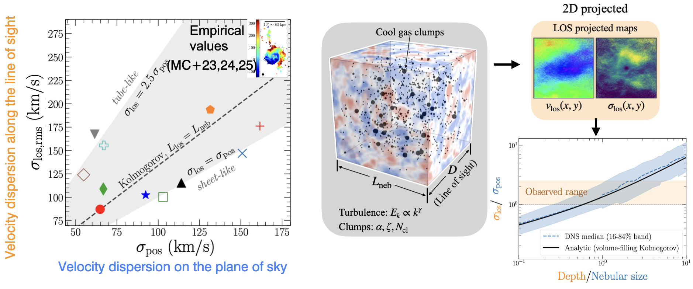

From IFS Maps to 3D Structure I: Constraining Geometry in the Circumgalactic Medium

The three-dimensional structure of the cool CGM -- its depth along the line of sight and how clumpy it is -- is poorly constrained, because quasar absorption lines only probe pencil beams. In this paper we show that the ratio of line-of-sight to plane-of-sky velocity dispersions measured from IFS emission-line maps constrains the line-of-sight depth of CGM nebulae relative to their projected size. Comparing with direct numerical simulations of turbulence projected through emitting slabs, we find that these nebulae are broadly as deep as they are wide. This paper sets up the theoretical framework for the turbulence diagnostics developed in a companion paper (Paper II, in prep).